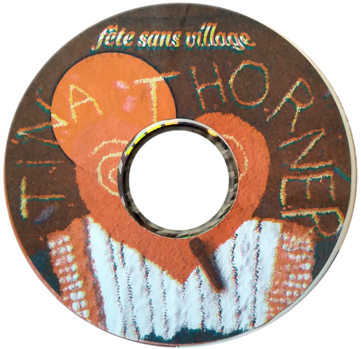
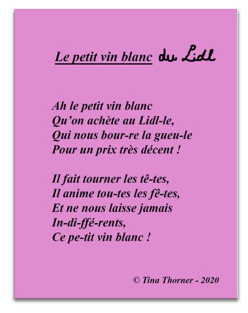
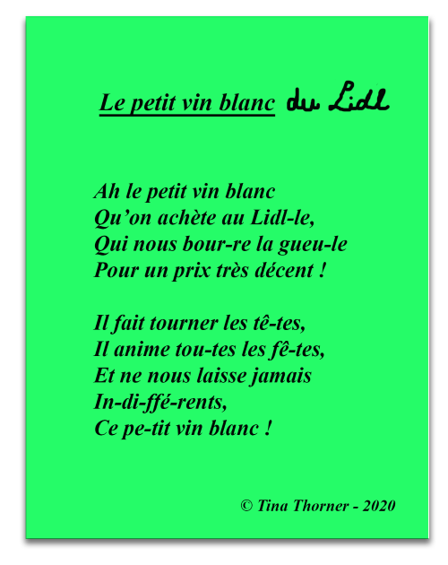
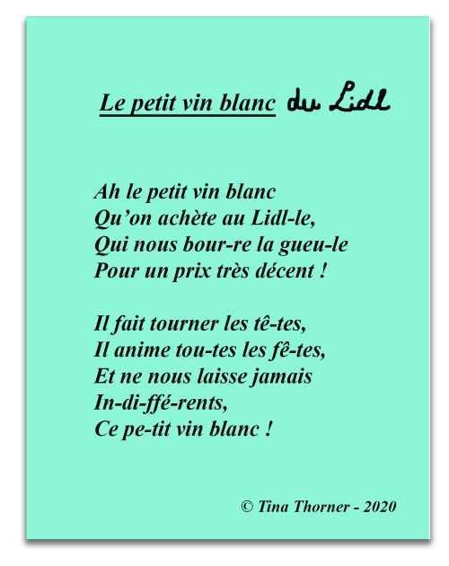
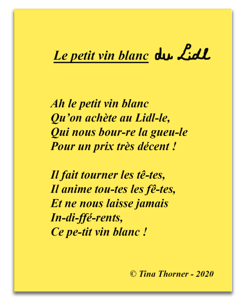
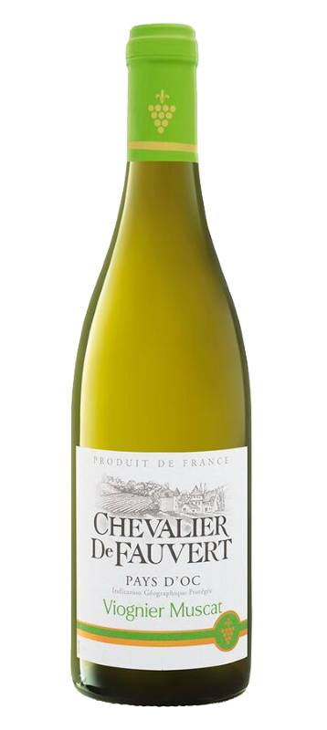

Tina Thorner chante les aléas du quotidien, parodie les standards du supermarché, fanfaronne devant l’Elysée. Le bal musette vire au drame, les cordons bleus et le gros son ont remplacé l’amour et les flonflons.
Entamé en 2020 pendant le confinement avec un live sur la chaine Youtube Boiler MErde, ce projet a plusieurs facettes et me permet de me promener facilement entre musique, vidéo, image, spectacle, objet
Fanny Alizonwww.fannyalizon.free.fr
«Musicalement le projet Tina Thorner fonctionne comme une fusion de deux courants, 2 esthétiques musicales différentes. D’un côté le bal musette dont l’étendart est l’accordéon et la voix, sources sonores qui sont ici «timbrées» et reverbérée de manière distinctive. De l’autre les musiques technos (sous des formes multiples -Dance, Transe, Hardcore, Gabber etc.) représentées par la forte présence de la pulsation et des synthétiseurs automatisés par des séquencers. Soit les deux archétypes de musiques populaires écoutées par les jeunes et les vieux pour danser et faire la fête.
C'est dans sa dimension plastique que le projet offre toute sa générosité, son élan. Il s'agit alors d'une proposition d'expérience esthétique multiple. Live audio et vidéo, dispositif Immersif et part[y]cipatif, scénographie et mise en espace du décor et de la scène comme terrain de jeu du public. Tina Thorner est le coeur d'un dispositif à travers lequel Fanny Alizon peut convoquer une multiplicité de médium (dessin, peinture, sculpture,tapisserie, photographie, vidéo, musique, chant, V-jaying etc.) et qui lui permet de se pencher sur les sujets qu'elle traite plastiquement depuis plusieurs années : la culture populaire, le faire ensemble,la vie quotidienne, et l'"étrangeté" et/ou la singularité du mondecontemporain.
La blague et la plaisanterie sont deux manières légères de s’exprimer. Elles ont l’avantage d’ouvrir le champ, d’être des manières poreuses de dire et de faire. Tina Thorner n’est ni moqueuse ni cruelle pas plus que prescriptive. Elle chante qu’elle ne voyage plus, qu’elle surfe sur E-bay, perd ses clées, va au Lidl, fait sa fête à l’Elysée. Fanny Alizon ne nous dit pas qu’il est bien ou non de manger des cordons bleus ou des pommes noisette. Car Tina Thorner est la reine du Gabber-Musette et que sa culture, sa proposition et son propos est avant tout celui de faire la fête.»
Tristan Philippon

L'album ici
Fête Sans village
février 2020 - 9 titres
label Les Mills <-------
dispo sur La Souterraine





clique sur la bouteille pour boire un petit coup en chantant
Plancher de danse,
Tapis en laine de 140 x 140 cm réalisé à la main en attendant la réouverture des bals bars